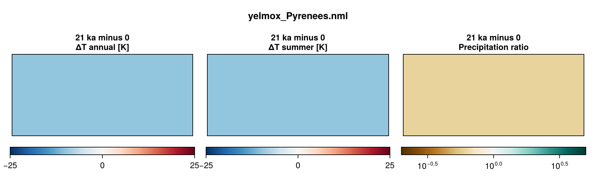
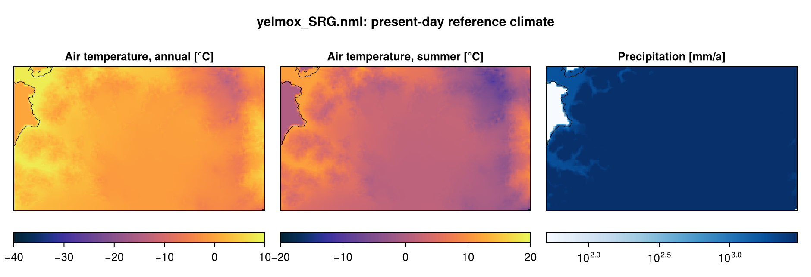

Mountain glaciers
Two mountain-glacier domains with the ice sheet at 250 m and no ocean ([comps] with_shelf = False): the Pyrenees over the last glacial cycle, -120 kyr to the present, forced by a spatially homogeneous air-temperature anomaly from an orbital index, and SRG (basin set SanRafael), 200 yr in the present-day climate.
- Program:
yelmox(make yelmox; formerlymake yelmox_glaciers) with the snapshot backend ([comps] climate = "snapshots", see Snapshots). - Config:
yelmox/yelmox_Pyrenees.nml,yelmox/yelmox_SRG.nml.
Running
Run from the yelmox root; there are no scripts (queue, walltime and threads are runme options).
runme -rs -q compute -w 08:00:00 --omp 16 -e yelmox -n yelmox/yelmox_Pyrenees.nml -o output/pyreneesrunme -rs -q compute -w 00:30:00 --omp 16 -e yelmox -n yelmox/yelmox_SRG.nml -o output/srgGrids
Each component runs on its own grid ([domain], see Multigrid coupling):
| Pyrenees | SRG | |
|---|---|---|
| Hub, ice sheet, surface | PYR-250M (1520 x 688) |
SRG-250M (208 x 120) |
| Climate | PYR-2KM (190 x 86), the grid of the FesmData ERA5 product |
SRG-250M |
| Isostasy | PYR-2KM |
SRG-16KM (off: [comps] with_isostasy = False) |
In the Pyrenees the climate is computed on the 2 km surface and moved to the 250 m surface for the surface model: monthly tas and pr interpolated (bilinear) and corrected for the elevation difference with the lapse rates of [snapshots] lapse and the precipitation scaling f_p. The geothermal heat flux is read on PYR-2KM and remapped onto the Yelmo grid.
Settings that keep the 250 m runs cheap: 6 vertical levels in the ice ([yelmo] nz_aa = 6), no level-set calving front ([ycalv] use_lsf = False), the climate updated every 50 yr in the Pyrenees ([comps] dt_clim = 50; SRG 10 yr; the surface still runs every step), and the climate and isostasy of the Pyrenees on 2 km.
Pyrenees
- Timeline:
[ctrl]-120 kyr to 0,dtt = 10yr, on relative time (tstep_method = "rel");[comps] dt_isos = 10yr. - Initial state: cold start from the present-day topography (
TOPO-GLO90-GEBCO2026), a 10-yr equilibration with constant boundaries ([sim] init_method = "equil",init_equil_time = 10). - Climate: the reference (
snapshot_pd, ERA5 1981–2010:tas,pr,zs) plus the uniform termcooling([term_cooling]ontasandpr,f_ta = -10K) on the seriesorbital_t2018([series_orbital_t2018] method = "series",input/alpha_orbital_t2018.dat, 1 at present and 0 at 21 ka, normalised withnorm_t0 = 0,norm_t1 = -21e3to 0 at present and 1 at 21 ka):dTa = f_ta * f, the precipitation timesexp(f_p dTa)(f_p = 0.05K-1, the default). The air temperature is the ERA5 reference at present and 10 K below it at 21 ka (+1.4 to -11.1 K over the run). No ocean. - Orbit: present day (
[orbit] method = "fixed_time",time = 0); the PDD takes no insolation. - Sea level: the model’s own ice (
[barysealevel] method = "fastiso"). - Output: 1D every 10 yr, 2D every 1 kyr, small 2D and restart bundles every 10 kyr.
[marine_shelf] stays in the par file with the shelf off: the domain still initializes the marine shelf (no data files are read).

SRG
- Timeline:
[ctrl]0 to 200 yr,dtt = 5yr, constant forcing time (tstep_method = "const"). No series or terms ([forcing] series = "",terms = ""), present-day orbit and constant sea level ([barysealevel] method = "const"): the climate is the reference throughout. - Initial state: present-day topography (
TOPO-GLO90-GEBCO2026, withz_bed_sd), a 10-yr equilibration ([sim] init_method = "equil"). - Climate: MAR v3.14 1960–1990 on
SRG-250M([snapshot_pd]), a legacyice_datafile not in FesmData; its database groups (srg_mar314_1960_1990_tas,_pr,_zs) are in the par file itself, which is searched before the[forcing] var_defsfiles.[snapshots] f_p = 0.096K-1. - Relaxation outside the icefield:
[yelmo_masks] relax = "~SanRafael:1",relax_tau = 50yr, with[ytopo] topo_rel = -1: outside basin 1 of theSanRafaelset the ice relaxes to the reference thickness; inside it evolves freely.[sim] relaxandoptare off ([relax],[opt]unused). - Output: 1D every 1 yr, small 2D every 10 yr, 2D every 200 yr, a restart bundle at the end.

Configuration
| Pyrenees | SRG | |
|---|---|---|
| Topography | GLO90 + GEBCO 2026 (TOPO-GLO90-GEBCO2026, FesmData) |
same, with z_bed_sd |
Reference climate (snapshot_pd) |
ERA5 1981–2010 (PYR-2KM) |
MAR v3.14 1960–1990 (SRG-250M, ice_data) |
| Surface mass balance | chion PDD ([chion] model = "pdd", [pdd_chion] pdd_method = "cg05"), time_equil = 10 yr |
chion ITM ([chion] model = "itm", smbpal’s [itm]), sigma_pdd = 8.27 K, time_equil = 100 yr |
| Ocean, shelf melt | off | off |
| Calving | none (calv_flt_method = "zero") |
calv_flt_method = "vm-l19" |
| Dynamics | DIVA, ssa_lat_bc = "all" |
DIVA, ssa_lat_bc = "all" |
| Basal friction | till angle ([ytill] is_angle = True), cf_ref = cf_min = 30 deg |
cf_ref = 1.002, cf_min = 0.01, linear between z0 = -300 and z1 = 200 m |
| Enhancement | 1 | enh_shear = 3.093, enh_shlf = 0.7 |
| Slope limits | [ytopo] grad_lim = grad_lim_zb = 1.0 |
0.5 |
| Isostasy | FastIsostasy LV-ELVA, uniform mantle and lithosphere | off |
| Geothermal heat flux | GHF-Lucazeau2019 (PYR-2KM) |
constant 50 mW m-2 ([ghf] use_obs = False) |
| Sediments | none ([sed] method = 0) |
none |